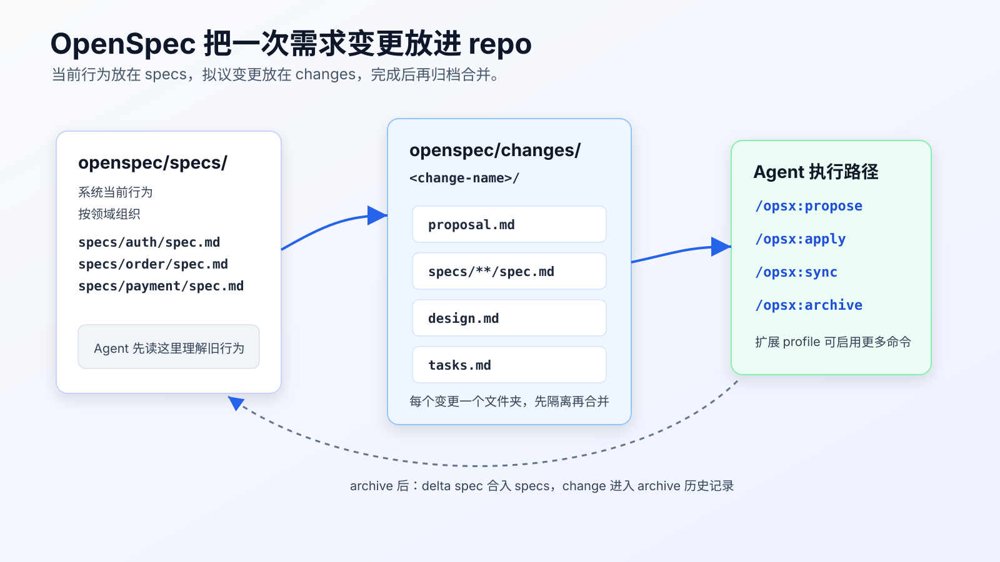
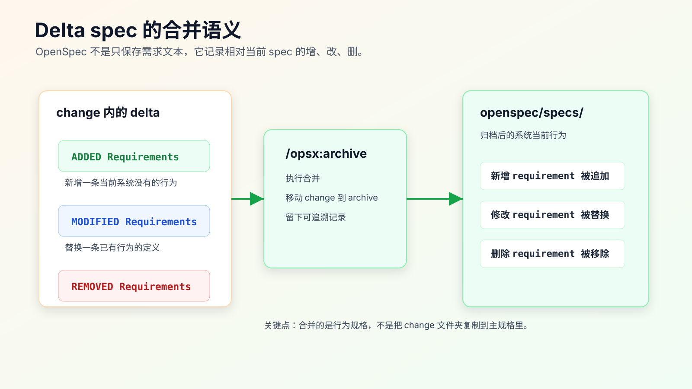

OpenSpec 实战：把需求变更放进 repo
手写 requirements.md、design.md、tasks.md 已经能解决很多个人任务，但它有一个明显短板：这些文件经常只服务一次开发，需求完成后就散落在分支、聊天记录或临时目录里。
问题通常出现在下一次变更。
你让 AI 改订单取消逻辑：已支付订单取消后进入退款流程。第一次做完时，requirements.md 写得很清楚，测试也跑过。两个月后，产品又要增加“部分发货订单允许取消未发货部分”。AI 需要知道现在系统到底怎么工作：
- pending 订单能不能取消。
- paid 订单是不是会进入 refund_requested。
- shipped 订单现在是否拒绝取消。
- duplicate cancel 有没有幂等保护。
- 退款请求失败时订单状态怎么处理。
如果这些信息只在旧 PR、旧聊天窗口和开发者脑子里，AI 很容易重新推断一遍，然后改出一组看起来合理但和现有系统冲突的代码。
OpenSpec 解决的不是“让 AI 更会写代码”，而是把需求变更纳入 repo：当前行为有稳定位置，拟议变更有独立目录，完成后再把变更合并回当前行为规格。
这对程序员很有用。因为真实项目里，AI Coding 最大的风险不是写不出代码，而是它不知道哪些行为是现在系统的合同，哪些只是你这次想改的内容。

OpenSpec 适合解决什么问题
OpenSpec 当前官方文档把它描述为一种和 AI coding assistant 对齐“要构建什么”的方式。它的 repo 结构围绕两个目录展开：
openspec/
├── specs/ # 系统当前行为
│ └── <domain>/
│ └── spec.md
├── changes/ # 拟议变更
│ └── <change-name>/
│ ├── proposal.md
│ ├── design.md
│ ├── tasks.md
│ └── specs/
│ └── <domain>/
│ └── spec.md
└── config.yaml
这套结构背后的工程判断很直接：
specs/ 写“系统现在怎么工作”，它不是愿望清单。
changes/ 写“这次准备怎么改”，它还没有进入当前行为。
archive 以后，变更里的 delta spec 才合并回 specs/，变成新的系统事实。
对个人 AI Coding 来说，这比把所有需求都塞进一个 prompt 稳得多。Agent 可以先读 openspec/specs/ 理解旧行为，再读 openspec/changes/<change>/ 理解当前变更，最后按 tasks.md 小步实现。
先确认它是不是该用在这次任务上
OpenSpec 不是每个小改动都要上。
这类任务可以直接用轻量 SDD：
- 改一个字段展示。
- 补一个边界测试。
- 修一个明确 bug。
- 做一次小范围重命名。
- 调整一段内部实现，不改变外部行为。
这类任务更适合 OpenSpec：
- 需求会改变系统行为合同。
- 改动跨多个模块。
- 需要保留变更历史，方便后续 AI 继续接手。
- 同一领域会反复迭代。
- 需要同时写清当前行为和拟议行为。
- 需求容易被模型误读，例如状态机、权限、支付、库存、风控、消息投递。
一个简单判断：如果你已经准备写 requirements.md、design.md、tasks.md，并且希望这次变更完成后还能沉淀为长期规格，OpenSpec 就值得考虑。
如果只是改按钮文案，用它会增加不必要的目录和步骤。
安装和初始化要先看前置条件
OpenSpec 官方安装文档会列出当前 Node.js 版本要求和支持的安装方式。写入项目规则前，先以官方安装文档和本机 openspec --version 结果为准。最常见的是：
npm install -g @fission-ai/openspec@latest
openspec --version
进入项目根目录后初始化：
cd your-project
openspec init
不要在一个脏工作区里直接初始化。先看工作树：
git status --short
建议在单独分支里做：
git switch -c chore/adopt-openspec
openspec init
git status --short
你要看的不是命令有没有输出“成功”，而是它给 repo 增加了什么文件：
find openspec -maxdepth 3 -type f | sort
初始化之后，先不要急着让 Agent 实现需求。第一步应该是补最核心的现有行为 spec。没有现有行为，后面的 delta spec 就缺参照物。
例如订单领域可以先有：
# Order Cancellation Spec
## Requirements
### Requirement: Pending order cancellation
The system SHALL allow a pending order to be canceled.
#### Scenario: Pending order canceled by user
- GIVEN a pending order
- WHEN the user cancels the order
- THEN the order status becomes canceled
### Requirement: Shipped order cancellation
The system SHALL reject cancellation for shipped orders.
#### Scenario: Shipped order cannot be canceled
- GIVEN a shipped order
- WHEN the user cancels the order
- THEN the cancellation is rejected
- AND the order status remains shipped
这段文字不是给人看的“产品说明”，而是后续 Agent 读取的系统合同。它应该尽量贴近真实行为，不要写未来设想。
用 propose 开一个变更
OpenSpec 当前 getting started 文档给出的默认快速路径是：
/opsx:propose -> /opsx:apply -> /opsx:sync -> /opsx:archive
默认 global profile 是 core，包含 propose、explore、apply、sync、archive。扩展流程里的 new、ff、continue、verify 需要通过 profile 配置启用后更新。写到团队或个人规则里时，最好把这一点写清楚，避免不同机器上的命令不一致。
针对“已支付订单取消进入退款流程”，不要只说：
/opsx:propose 支持付费订单取消
这个描述太短，Agent 会自己补很多业务假设。
把业务边界写进输入：
/opsx:propose paid order cancellation should enter refund flow
Current behavior:
- pending orders can be canceled directly.
- shipped orders cannot be canceled.
- paid orders currently become canceled directly.
New behavior:
- paid orders should become refund_requested.
- a refund request should be created once.
- duplicate cancellation must not create duplicate refund requests.
- if refund request creation fails, order status should remain paid.
Out of scope:
- payment provider callback behavior.
- public API response shape.
- database schema migration.
Verification:
- focused order cancellation tests.
- idempotency test for duplicate paid cancellation.
- broader order module tests after focused tests pass.
这段输入有三层价值：
第一，它把旧行为和新行为分开。
第二，它明确不改什么。
第三，它把验证命令和风险放在变更开头，避免 Agent 只根据 happy path 生成设计。
OpenSpec 会为这个 change 创建独立目录。你要检查这些文件，而不是直接进入实现：
openspec/changes/paid-order-cancel-refund/
├── proposal.md
├── design.md
├── tasks.md
└── specs/
└── order/
└── spec.md
如果目录名、领域名、文件组织明显不符合你的 repo，就先改这些规格文件，不要让 Agent 带着错误结构实现。
proposal 要写清为什么改，不能替代 spec
proposal.md 适合写这次变更的动机、范围和方案概览。
比较好的内容是：
# Proposal: Paid order cancellation enters refund flow
## Why
Paid orders cannot be treated like pending orders because payment capture has already happened. Directly marking them canceled loses refund state and makes duplicate cancel requests unsafe.
## What Changes
- Paid order cancellation creates a refund request.
- Paid order status becomes refund_requested.
- Duplicate paid cancellation does not create another refund request.
- Refund request creation failure leaves the order paid.
## Out of Scope
- Payment provider callback flow.
- Public API response shape change.
- Database schema migration.
不要把 proposal.md 写成完整技术方案，也不要把所有验收条件都堆在这里。proposal 负责“为什么”和“改什么”，真正的行为变化应该进入 delta spec。
很多人用 AI 写 spec 时会犯一个错：把所有内容都写进一个大文档。读起来完整，执行时很难定位。OpenSpec 的价值恰恰在于拆开这些职责。
delta spec 是 OpenSpec 最关键的部分
OpenSpec 的 changes/<change>/specs/<domain>/spec.md 不是普通需求文档，而是相对当前 openspec/specs/ 的变化。
官方文档里 delta spec 使用这些区域表达变化：
## ADDED Requirements
## MODIFIED Requirements
## REMOVED Requirements
已支付订单取消可以写成：
# Delta for Order
## MODIFIED Requirements
### Requirement: Paid order cancellation
The system SHALL move paid orders to refund_requested when a user cancels them.
#### Scenario: Paid order enters refund flow
- GIVEN a paid order without an existing refund request
- WHEN the user cancels the order
- THEN the order status becomes refund_requested
- AND exactly one refund request is created
#### Scenario: Duplicate paid cancellation is idempotent
- GIVEN a paid order that already has a refund request
- WHEN the user cancels the order again
- THEN no additional refund request is created
- AND the order remains refund_requested
#### Scenario: Refund request creation fails
- GIVEN a paid order
- WHEN refund request creation fails during cancellation
- THEN the order remains paid
- AND the failure is reported to the caller
这段 spec 有几个细节值得注意。
它没有写代码结构，也没有指定函数名。行为规格先描述系统必须满足什么。
它写了异常路径。AI 很容易只实现“paid -> refund_requested”，但真实生产问题往往出在重复请求和部分失败。
它写了可测试场景。后面的 tasks.md 可以直接从这些 scenario 拆出测试任务。

design 负责技术约束，不负责重新发明需求
design.md 应该把实现边界写清楚。它的重点不是“我们将实现一个优雅的退款流程”，而是下面这些具体问题：
- 哪个模块拥有订单状态转换。
- 哪个模块负责创建退款请求。
- 状态更新和退款请求创建是否需要事务。
- 幂等键怎么生成。
- 失败时是否回滚状态。
- 哪些接口响应不能改变。
- 这次是否需要数据迁移。
一份可执行的 design.md 可以这样写：
# Design: Paid order cancellation enters refund flow
## Current Code Ownership
- `OrderCancelService` owns user cancellation orchestration.
- `OrderStatusTransition` owns allowed status transitions.
- `RefundRequestService` owns refund request creation.
## Proposed Flow
1. `OrderCancelService` loads the order.
2. For pending orders, keep existing pending -> canceled behavior.
3. For shipped orders, keep existing rejection behavior.
4. For paid orders:
- validate paid -> refund_requested transition.
- create refund request with idempotency key `order:<orderId>:cancel`.
- persist status only when refund request creation succeeds.
## Compatibility
- Do not change public API response shape.
- Do not change payment provider callback handling.
- Do not add a database migration in this change.
## Failure Handling
- If refund request creation fails, keep order status paid.
- Return existing error envelope.
## Verification
- Focused cancellation tests.
- Duplicate cancellation test.
- Broader order module tests.
这里有一个关键点：design 不是越长越好。
如果 design 写了很多“采用分层架构”“提高可维护性”，但没有说清事务边界、幂等策略和兼容性，它对 AI 没什么约束力。
AI Coding 里真正有用的 design，是能防止模型越界的 design。
tasks 要让 Agent 小步执行
tasks.md 不能只是：
- 实现退款流程
- 补测试
- 调整文档
这会让 Agent 一口气改完，最后给你一个很大的 diff。
拆成可验证任务：
# Tasks
## 1. Add focused cancellation tests
- [ ] Add paid cancellation enters refund_requested test.
- [ ] Add duplicate paid cancellation idempotency test.
- [ ] Add refund request failure keeps order paid test.
Verify:
- `npm test -- order-cancel`
Stop if:
- existing pending or shipped cancellation tests fail before implementation.
## 2. Add paid status transition
- [ ] Add paid -> refund_requested transition.
- [ ] Keep pending and shipped behavior unchanged.
Verify:
- `npm test -- order-cancel`
Stop if:
- public API response shape must change.
## 3. Wire refund request creation
- [ ] Create refund request with idempotency key.
- [ ] Persist status only after refund request creation succeeds.
Verify:
- `npm test -- order-cancel`
Stop if:
- payment callback code needs to change.
## 4. Run broader verification
- [ ] Run order module tests.
- [ ] Record changed files and residual risks.
你可以让 Agent 先执行 Task 1，完成后停止：
只执行 openspec/changes/paid-order-cancel-refund/tasks.md 的 Task 1。
要求：
- 不改实现代码。
- 只新增或修改 focused cancellation tests。
- 跑 tasks.md 里指定的验证命令。
- 输出失败用例和原因。
- 完成后停止。
这和“按 OpenSpec 实现”差别很大。前者保留人对 diff 和节奏的控制，后者容易变成一次性大改。
sync 和 archive 不是收尾动作那么简单
OpenSpec 默认快速路径里有 /opsx:sync 和 /opsx:archive。
sync 的工程意义是：实现过程中发现规格、设计、任务和代码不一致时，把 artifact 拉回一致状态。比如 Task 2 做到一半才发现当前 repo 里 RefundRequestService 已经有幂等逻辑，不应该重复实现。此时要更新 design 和 tasks，而不是让聊天记录承担这部分事实。
archive 的工程意义更大。根据当前 getting started 文档，归档时：
ADDEDrequirements 会追加到主 spec。MODIFIEDrequirements 会替换已有版本。REMOVEDrequirements 会从主 spec 删除。- change 文件夹会移动到
openspec/changes/archive/，作为历史记录。
这一步完成后，openspec/specs/order/spec.md 才描述新的系统当前行为。
如果代码已经合并，但没有 archive，后续 AI 再读 openspec/specs/ 时还会看到旧行为。它会以为 paid order cancellation 仍然直接 canceled。这样的 spec 比没有 spec 更危险，因为它给了 Agent 一个过期但看起来权威的上下文。
归档前要做的检查
不要把 /opsx:archive 当作“文件整理命令”。归档前至少检查这些点：
git diff -- openspec/specs openspec/changes
git diff --stat
重点看：
- delta spec 是否只写本次变更。
- 主 spec 是否已有对应的旧 requirement 可替换。
- design 是否和最终代码一致。
- tasks 是否还有未完成项。
- 验证命令是否真实跑过。
- change 里有没有聊天废话或临时结论。
如果你的项目有测试命令，先跑聚焦测试，再跑受影响模块测试：
npm test -- order-cancel
npm test -- order
如果测试不能本地跑，要在 change 里记录原因和替代验证方式。不要让 Agent 写“all tests passed”，除非你能看到命令和输出。
OpenSpec 和轻量 SDD 的边界
轻量 SDD 的好处是快。一个 .ai/tasks/<feature>/requirements.md 加上 design.md、tasks.md，就能约束一次复杂任务。
OpenSpec 的好处是变更可归档。它多了三个关键能力：
specs/保存当前系统行为。changes/隔离拟议变更。- delta spec 在 archive 后合并进主规格。
如果你的项目长期由同一个人维护，且 AI 只做小任务，轻量 SDD 足够。
如果一个领域会反复改，或者你希望 AI 以后能读取历史行为，不要每次都重新解释，OpenSpec 更合适。
这不是工具信仰问题，而是维护成本问题。规格资产越长期，越需要明确“当前事实”和“拟议变更”的边界。
常见坑
坑一：没有先补当前 spec。
只写 change，不写 openspec/specs/，delta spec 就没有可靠参照。Agent 会把“当前行为”也当成自己可以猜的东西。
坑二：把 proposal 写成大杂烩。
proposal 里混入需求、设计、任务、验证和讨论结论，后续很难维护。它只需要写清为什么改、改什么、不改什么。
坑三：delta spec 写实现细节。
spec 应该写行为，不应该写“调用某个函数”“新增某个类”。这些放进 design。
坑四：archive 前没有同步 artifacts。
代码实现和 design 已经不一致，但 archive 仍然合并旧 design。后续 AI 会被这个过期设计带偏。
坑五：让 Agent 一次执行完整 change。
OpenSpec 管理的是变更，不代表每次都要全自动做完。复杂任务仍然应该按 tasks 小步授权。
坑六：把官方命令能力写死。
OpenSpec 仍在演进，不同 profile、不同 agent 集成可能有差异。项目规则里要写“以本 repo 当前安装结果为准”，并保留 openspec --version、openspec list、openspec show 这类检查动作。
可以先从一个高价值领域开始
不要一上来给整个项目补完整 specs。
先选一个 AI 经常改错、业务规则又比较稳定的领域：
- 订单状态。
- 权限校验。
- 支付退款。
- 库存扣减。
- 消息投递。
- 任务调度。
先补 3 到 5 条当前行为 requirement。然后选一个真实变更走完整流程：
补当前 specs
开 changes/<change-name>
写 proposal
写 delta spec
写 design
写 tasks
按 task 小步实现
sync artifacts
archive 合并
做完后，把下一次 AI Coding 的上下文入口改成：
先读取 openspec/specs/order/spec.md。
再读取 openspec/changes/<change-name>/proposal.md、specs/order/spec.md、design.md、tasks.md。
只执行 tasks.md 中当前授权的 task。
到这一步，OpenSpec 才算进入个人工作流。它带来的变化不在目录数量，而在 AI 理解项目的入口。
改完后重点看什么
落地 OpenSpec 后，先看四个结果：
- AI 是否先读
openspec/specs/，再读当前 change。 - 需求讨论是否沉淀到 proposal 和 delta spec，而不是留在聊天记录。
- 实现过程中发现的新事实是否同步回 design/tasks。
- archive 后主 spec 是否能独立描述新系统行为。
如果这四点做不到，OpenSpec 只是换了一个地方写文档。
如果这四点能做到，它会把 AI Coding 从“这次怎么问”推进到“这个 repo 如何长期被 AI 正确理解”。
常见问题
OpenSpec 会不会太重？
对小改动会。对状态机、权限、支付、库存这类反复变化的领域，它反而能减少重复解释和返工。
可以只用 OpenSpec，不写测试吗？
不建议。spec 是行为合同，测试是可执行证据。AI 最容易在自然语言和实现之间出现偏差，测试能把偏差暴露出来。
delta spec 和 requirements.md 有什么区别？
普通 requirements.md 往往描述这次要什么。delta spec 明确描述相对当前 spec 的增、改、删，并能在 archive 后合并回主 spec。
OpenSpec 能代替设计评审吗？
不能。它能让设计和变更有固定位置，但事务边界、兼容性、风险取舍仍然需要程序员判断。
已经有产品 PRD 了，还需要 proposal 吗？
需要时可以把 PRD 摘要到 proposal。PRD 通常面向产品意图，proposal 要面向 repo 里的工程变更范围。
可复查资料
- OpenSpec 官方站点：https://openspec.dev/
- OpenSpec GitHub 仓库：https://github.com/Fission-AI/OpenSpec/
- OpenSpec 安装文档：https://github.com/Fission-AI/OpenSpec/blob/main/docs/installation.md
- OpenSpec getting started：https://github.com/Fission-AI/OpenSpec/blob/main/docs/getting-started.md
- OpenSpec concepts：https://github.com/Fission-AI/OpenSpec/blob/main/docs/concepts.md